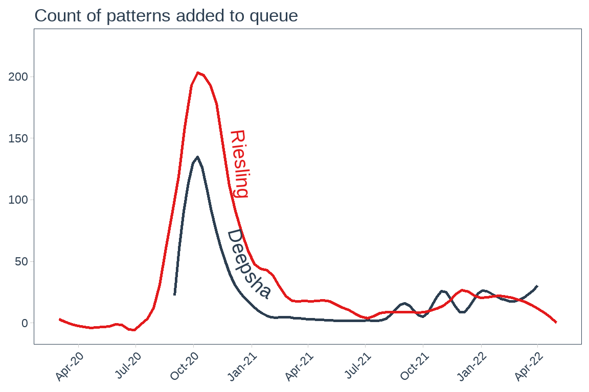
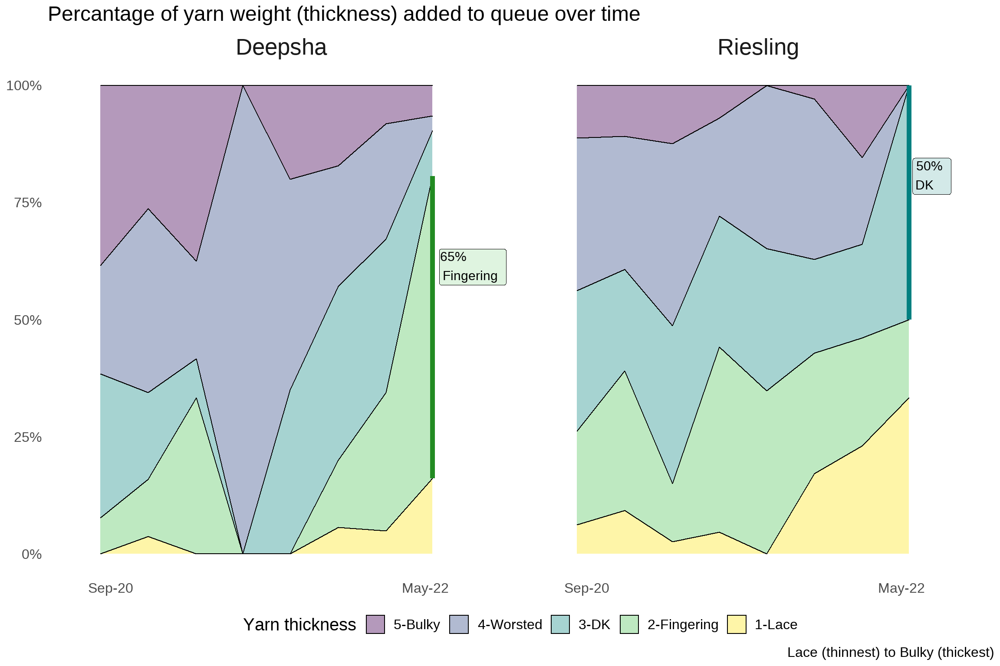
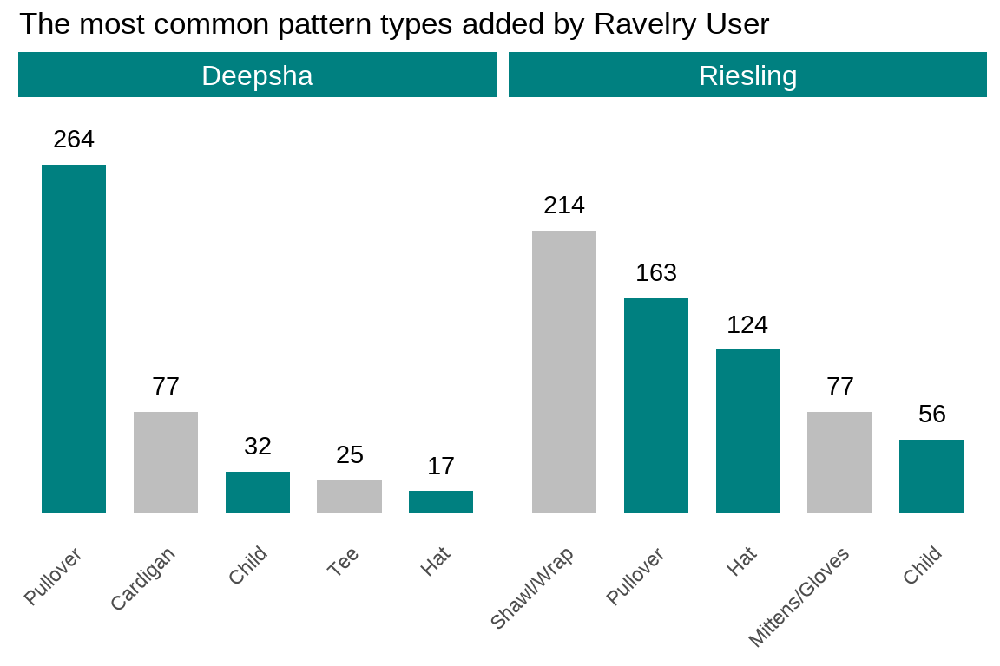
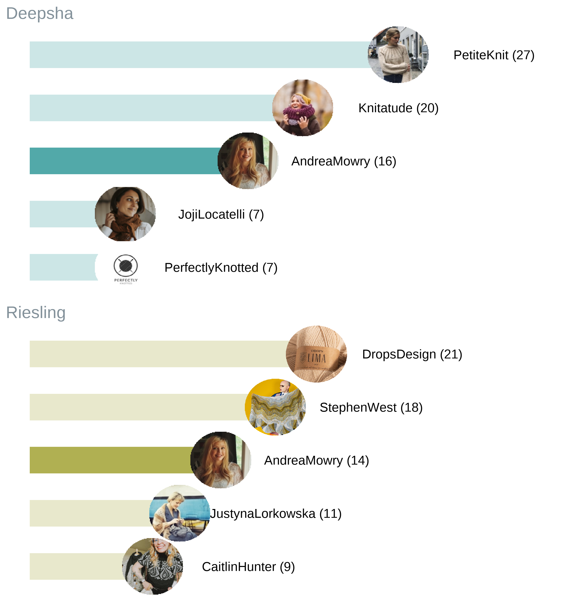

# For EDA
library(tidyverse)
library(DT)
library(lubridate)
library(tidyquant)
library(viridis)
library(thematic)
library(tidytext)
library(magick)
library(ggimage)
library(cropcircles)
# For interacting between python and R
library(reticulate)
# For storing any secret keys required by API calls
library(dotenv)
source("./data_cleaning_functions.R")Deepsha Menghani and Riesling Walker worked together on a Microsoft Global Hackathon project to analyze data around a common passion using Python and R. Through this work, we wanted to create an end-to-end data science portfolio project that highlights our ability to learn relevant techniques for different parts of the project and drives data-based decisions.
Portfolio project goal
A portfolio project allows you to demonstrate your abilities as a data scientist through practical examples. Our goal with this project was to build and showcase the following skills:
1. Pulling data with API calls in Python using Flask.
2. Accessing the output of Python API calls from R easily using Reticulate.
3. Analyzing our project data using Ggplot2 in R and wrapping the portfolio project with data-driven insights.
This is the final article in a three-part series aimed at going in-depth into each of the above steps within our project. You can find the first article in the series here, which provides a handy overview of APIs and a step-by-step guide on how to use APIs in Python for first-time API users. The second article in the series found here goes over how we used Reticulate to call Python functions in R to get the relevant data into data frames for visualization using ggplot2 along with numerous debugging examples. Finally, this article focuses on how we asked relevant questions from our data that are centered around the primary business decision we are trying to drive.
Project details
For a portfolio project, we wanted to pick something that allowed us to build and showcase the skills noted above as well as have fun exploring data around our common hobby. So, we decided to use our data science skills to analyze our knitting queues on Ravelry, a social networking and organizational website for yarn-related crafts.
Ravelry has an API that enables access to its data. If you would like to execute this project end to end on your own, you will need to generate your own Ravelry API credentials. This step is very quick.
Where to find the code files
You can find the code to recreate everything in this article at this Github repo.
Our primary business decision
With the Ravelry API providing knitting queue data, we wanted to use analytics to figure out what yarn to buy for a friend as a gift. With this business decision in mind, we took the following steps.
Note that this specific project was a one-time analysis. However, it could be expanded to build a yarn recommendation engine to recommend yarn quantities and weight for any given Ravelry username.
Step 1: Sourcing data from the Ravelry API in Python
Using the Ravelry API through Flask in Python, we defined functions that output relevant information.
For more information about what APIs are, how to get started with APIs, and the steps we took to build our function calls (along with great knitting photos), you can see our first article, which also serves as a how-to guide for first-time API users.
Step 2: Calling Python functions from R to enable exploratory data analysis with ggplot2
With the completed execution of the API calls that returned data as a Python data frame, we wanted to pull that data into R so that we cold analyze it using ggplot2.
Reticulate makes it extremely easy to collaborate and talk between the two languages of Python and R. In this step, we used Reticulate to call Python functions in R to get the relevant data into R data frames that we could then use to visualize using ggplot2. Additionally, we combined datasets over multiple pages using purr mapping functions, bypassed errors using possibly, and mitigated other bugs and quirks that we encountered while using APIs and combining R and Python.
For a more detailed explanation of why we chose two languages for this portfolio project, and for more details about this step along with code, please see our article here.
Step 3: Data exploration and recommendation
With our data now in R, it's easy to explore using summary statistics and data visualizations using ggplot2. Using this information, we can draw conclusions about what kind of yarn to buy for a friend.
In this article, we focus on the questions we tried to answer through the data available to us, specifically to drive our business decision.
Business case
For the sake of this "business case" of buying yarn for a friend, Deepsha is looking to buy Riesling some yarn and is comparing their individual queuing patterns to gain insight.
With so much data available through the API, it was necessary to differentiate between doing a merely interesting versus truly impactful analysis, an ability that comes in handy for all our data science projects.
Our Ravelry usernames are "rieslingm" and "yarnsandcoffee". For our visualizations, we plotted the Ravelry behavior of both of us as users to be able to compare, although this analysis could have been done with only one username. We refer to these usernames as "Riesling" and "Deepsha" in all visualizations for readability.
Cleaning the data
First, we cleaned the data to ensure the columns were in the right formats and the data was ready to make our visuals. Some examples of this included simplifying yarn weight categories, clarifying labels and descriptions, parsing relevant information like pattern author, and combining Deepsha and Riesling's projects into one table. This cleaned up table is called 'projects_queued', and the code below for the plots reference this table.
Note: You can check out the code to clean the data at this GitHub repo; in this article we share the code for specifically creating the plots.
Question: Is Riesling still active?
While Deepsha knows that Riesling uses Ravelry, Deepsha wants to know whether Riesling has recently continued to add projects to her knitting queue before Deepsha jumps into analyzing Riesling's queue. To confirm that, Deepsha plotted their number of queued projects over time.
patterns_added_by_date_tbl <- data_cleaned %>%
count(username,month_year)
patterns_added_by_date_plot <- patterns_added_by_date_tbl %>%
ggplot(aes(month_year, n, color = username, label = username)) +
stat_smooth(inherit.aes = TRUE, se = FALSE, span = 0.3, show.legend = TRUE) +
scale_x_date(date_labels = "%b-%y", breaks = "3 month") +
theme_tq() +
theme(
axis.text.x = element_text(angle = 45, hjust = 1),
axis.title.y = element_blank(),
axis.title.x = element_blank(),
panel.grid = element_blank(),
legend.position = "none"
) +
labs(title = "Count of patterns added to queue") +
scale_color_tq() +
geomtextpath::geom_textpath(size = 5, text_only = TRUE, text_smoothing = 50, padding = unit(0.05, "inch"), vjust=-0.5)
patterns_added_by_date_plot
It is interesting to note that both Deepsha and Riesling had a "pandemic year" hobby jump. It is more relevant, though, that Riesling has continued to add projects to her queue recently, so Deepsha can analyze her more recent projects to figure out a perfect yarn gift.
Question: What yarn weight does Riesling like now?
Yarn weight describes the thickness of yarn. While looking for a gift, it is important for Deepsha to figure out what yarn weight she should get for Riesling as that varies a lot between projects. For this, Deepsha looked at five of the most common yarn weight categories ranging from very thin yarn (Lace weight) to very thick yarn (Bulky weight).
She looked at Riesling's queued projects and the yarn weight that these projects require. She also wanted to understand whether Riesling's preferences for projects with specific yarn weights have evolved over time. For this she calculated the percentage of projects added with each of these yarn weights and then plotted how that percentage changed over time.
yarn_weights_over_time <- yarn_weights_clean_func(data_cleaned)
label_data <- yarn_weights_over_time %>%
filter(quarter_year == as.Date("2022-04-01")) %>%
arrange(username, desc(yarn_weight_category)) %>%
group_by(username) %>%
mutate(yend = cumsum(percentage)) %>%
mutate(ystart = lag(yend)) %>%
ungroup() %>%
filter(username == "Riesling" & yarn_category == "DK" | username == "Deepsha" & yarn_category == "Fingering") %>%
mutate(perc_label = str_glue("{scales::percent(percentage)} \n {yarn_category} "))
yarn_weights_plot <- yarn_weights_over_time %>%
ggplot(aes(x=quarter_year, y=percentage, fill=yarn_weight_category)) +
geom_area(color = "black", alpha=0.4) +
facet_wrap(~ username, scales = "free_x") +
scale_fill_viridis(discrete = T) +
theme_minimal() +
scale_x_date(date_labels = "%b-%y", breaks = seq(as.Date("2020-09-01"), as.Date("2022-08-01"),by = "20 month"), limits = c(as.Date("2020-05-01"), as.Date("2022-08-01"))) +
theme(
axis.text.x = element_text(angle = 0, hjust = 1), axis.title.y = element_blank(), axis.title.x = element_blank(), legend.position = "bottom", panel.grid = element_blank(), text = element_text(size = 15), strip.text.x = element_text(size = 20)) +
labs(title = "Percantage of yarn weight (thickness) added to queue over time", caption = "Lace (thinnest) to Bulky (thickest)", fill = "Yarn thickness") +
scale_y_continuous(labels = scales::percent) +
geom_segment(data = label_data %>% filter(username == "Deepsha"), aes(x = quarter_year, xend = quarter_year, y = ystart, yend= yend), colour = "forestgreen", size = 2) +
geom_segment(data = label_data %>% filter(username == "Riesling"), aes(x = quarter_year, xend = quarter_year, y = ystart, yend= yend), colour = "#008080", size = 2) +
geom_label(data = label_data, aes(x = quarter_year, y= yend, label = perc_label), color = "black", alpha = 0.2, hjust = -0.1, vjust = 3, size = 4,show.legend = FALSE)
yarn_weights_plot
Deepsha and Riesling both moved from thicker yarn to thinner yarn as they gained experience. This is the case with a lot of people learning knitting as a new hobby, as they tend to start with thicker yarn to make it easier to pick up the craft.
Unlike Deepsha, who has been queuing a lot more fingering weight yarn lately, Riesling has been queuing more lace and DK weight. So, if Deepsha wants to get a gift for Riesling, rather than her new favorite yarn weight (fingering), she should opt for DK or lace. Good thing she checked the data!
Question: How much yarn should be in the gift?
The amount of yarn required to make something can vary drastically between projects. Knitters would rather not get yarn than get too little yarn to accomplish their favorite project. So, it is important for Deepsha to know what type of projects Riesling likes to make, so that she can figure out what quantity of yarn to buy her.
top_patterns_by_user <- top_patterns_clean_func(data_cleaned)
top_patterns_plot <- top_patterns_by_user %>%
ggplot(aes(pattern_type.name, n, fill = common_flag)) +
geom_col(show.legend = FALSE, alpha = 1, width = 0.7) +
facet_wrap(~username, scales = "free_x") +
geom_text(aes(label=n, vjust=-1)) +
scale_x_reordered() +
scale_fill_manual(values = c("gray","#008080")) +
theme(
axis.text.x = element_text(angle = 45, hjust = 1), axis.text.y = element_blank(), axis.title.y = element_blank(), axis.ticks = element_blank(), panel.grid = element_blank(), panel.background = element_rect(fill = "white"), strip.background =element_rect(fill="#008080", size = 15), strip.text = element_text(colour = 'white', size = 12)
) +
labs(
y = "Number of pattern types added to queue", x = NULL,
title = "The most common pattern types added by Ravelry User"
) +
ylim(c(0,300))
top_patterns_plot
Deepsha and Riesling have three pattern types in common among their top favorite patterns. Even though Riesling has the most shawls/wraps in her queue, she also has a lot of pullovers. Because Deepsha also has a lot of pullovers, she's probably familiar with how much yarn goes into one of those, so she will be more likely to buy the right yarn quantity for that item.
Question: What pattern should Deepsha get for Riesling?
Finally, Deepsha has decided to be extra generous and buy Riesling a gift card for a pattern to use with the new yarn. So, she must figure out which designer to buy a gift card from. For this, Deepsha needed to look at what designer projects are most common in Riesling's queue.
top_n_authors_tbl <- top_authors_clean_func(data_cleaned, top_n = 5)
top_n_authors_plot <- top_n_authors_tbl %>%
ggplot(aes(pattern_author.name, n, fill = username)) +
geom_text(aes(x = pattern_author.name, y = n+7, label = str_glue("{author} ({n})")), color = "gray2", size = 8) +
geom_col(aes(fill = username), show.legend = FALSE, alpha = .2, width = .5) +
geom_col(data = (top_n_authors_tbl %>% filter(pattern_author.name %>% str_detect("Andrea"))), aes(fill = username), show.legend = FALSE, alpha = .6, width = .5) +
facet_wrap(~username, scales = "free_y", nrow = 2) +
coord_flip() +
scale_x_reordered() +
scale_y_continuous(expand = c(0,0)) +
theme_minimal() +
theme(
axis.title.x = element_blank(),
axis.text.y = element_blank(),
axis.title.y = element_blank(),
axis.text.x = element_blank(),
panel.grid = element_blank(),
text = element_text(size = 20, color = "gray2"), strip.text.x = element_text(size = 30, color = "#83919a", hjust = 0)
) +
scale_fill_manual(values = c("#008080","yellow4")) +
labs(
) +
geom_image(aes(x = pattern_author.name, y = n, image = circle_crop(paste0("Images/", author, ".jpg"))),
asp = 15/8,
size = 0.11) +
ylim(0,37)
top_n_authors_plot
Deepsha has a few authors to choose from, but she also might take this opportunity to introduce Riesling to her own favorite designer, PetiteKnit! Riesling and Deepsha also have a common pattern author that they both like: Andrea Mowry. Deepsha can decide to give Riesling an Andrea Mowry gift card so they could knit a pattern of hers together!
The final business decision (drumroll!!!)
Overall, through this data exploration project, Deepsha now has a lot of information to take to her local yarn store to buy Riesling a wonderful gift! She will likely buy 1,400 yards of DK weight yarn for an Andrea Mowry pullover.
What's next?
While Deepsha was able to get the answer to what her friend's favorite yarn is so that she can give Riesling a meaningful gift, there is so much more that is possible with the Ravelry API data. For example:
· Use the above logic to recommend yarn and projects to Ravelry users.
· Understand what day of the week and time of day people are most actively using Ravelry to add projects to their queues.
· Create space on the Ravelry platform for new designers to thrive by enabling them to be discovered through relevant recommendations by their Ravelry friends.
We hope this article inspires you to create a fun portfolio project with the information and learning shared by Riesling and Deepsha. If you want to learn how to create your data science portfolio website easily with Quarto, you can check out this talk Deepsha did for Posit PBC (previously RStudio). It has live coding, so make sure to come with some popcorn!
Follow Deepsha, Riesling, or Data Science @ Microsoft (all on Medium.com) to see the previous articles in this series.